Omitama, Ibaraki: things to do, food and stays
Omitama · Ibaraki
Omitama
Highlighted on the Ibaraki map.
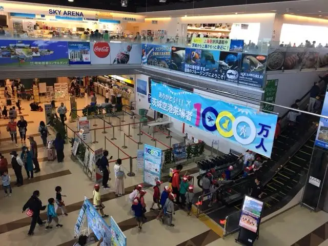
Stay
ビジネスホテル六号
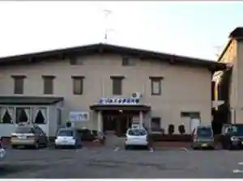
Business Hotel Roku Go
Hotel in Koiwako, Omitama with business travelers.
ファミリーイン茨城
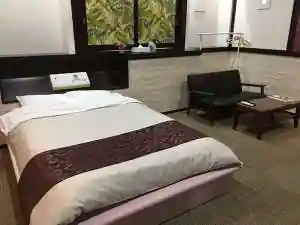
Famiriin Ibaraki
Inn in Saigochi, Omitama with family-friendly stays and business travelers.
SMA・MO inn Omitama
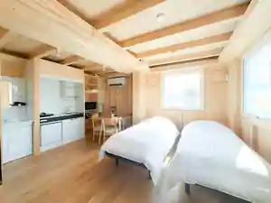
SMA MO inn Omitama
HOTEL R9 The Yard 小美玉
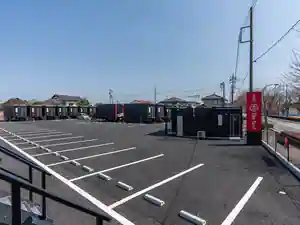
HOTEL R9 The Yard Omitama
おみたんハウス
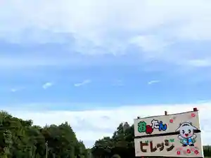
Omitan House
Inn at Nomamahigaeri Onsen in Jokichikage, Omitama.
一棟貸切宿 藤右衛門
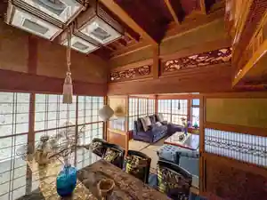
Hitomune Kashikiri Yado Toemon
Dining
とんかつ美沢
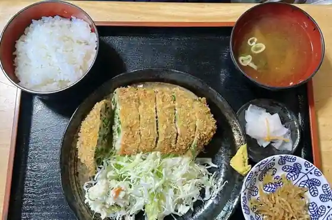
Tonkatsu Misawa
三代目むじゃき
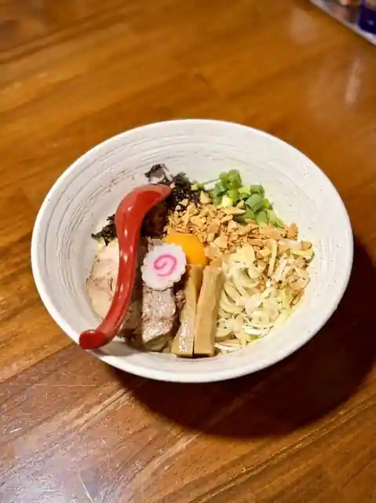
Sandaime Mujaki
PGM 石岡ゴルフクラブ レストラン
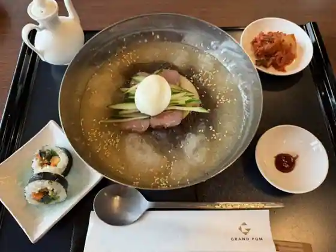
PGM Ishioka Gorufukurabu Restaurant
海鮮食事処 いしざき
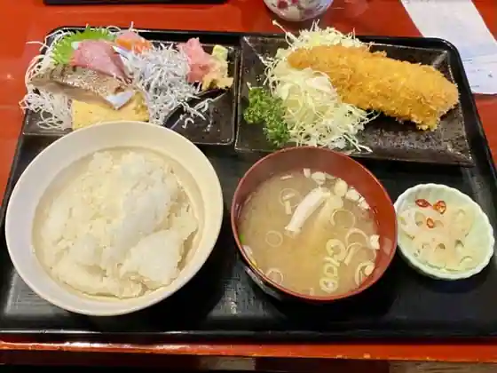
Kaisen Shokuji Tokoro Ishizaki
太平洋クラブ＆アソシエイツ美野里コース
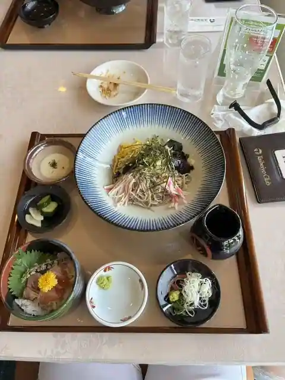
Taiheiyo Kurabu & Asoshieitsu Minori Kosu
もつ煮本舗 まるさん食堂 おみたま店
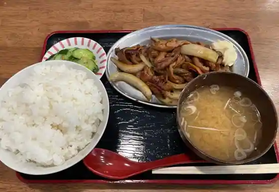
Motsu Ni Honpo Marusan Shokudo Omitama
御食事処 はるみ
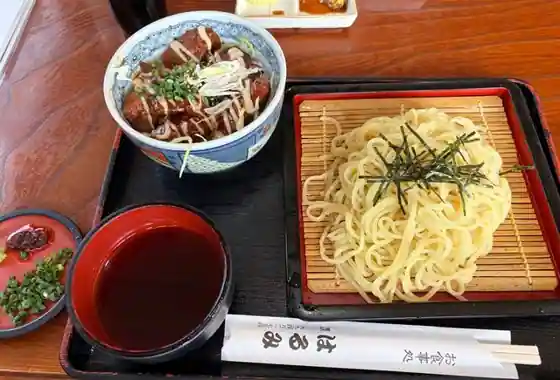
Mike Koto Tokoro Harumi
美野里パーキングエリア（下り線）フードコート
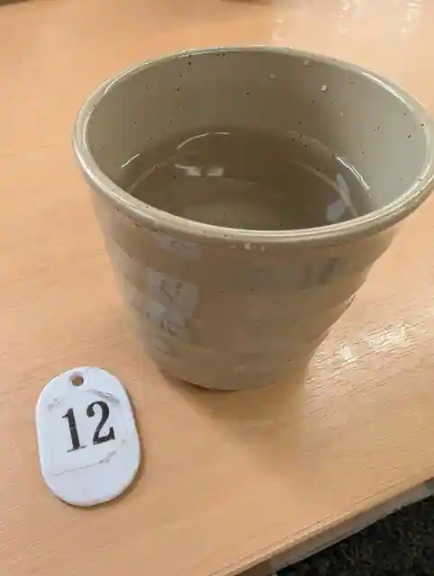
Minori Pakingueria (Kudari Sen) Fudokoto
美野里パーキングエリア（上り線）フードコート
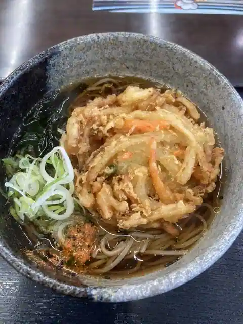
Minori Pakingueria (Nobori Sen) Fudokoto
スカイライトカフェ
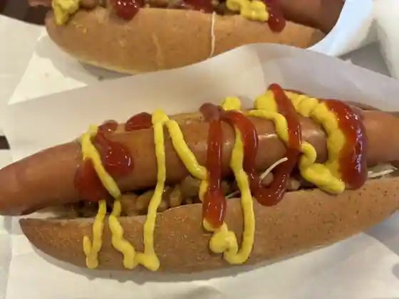
Sukairaito Cafe
そば処たむら
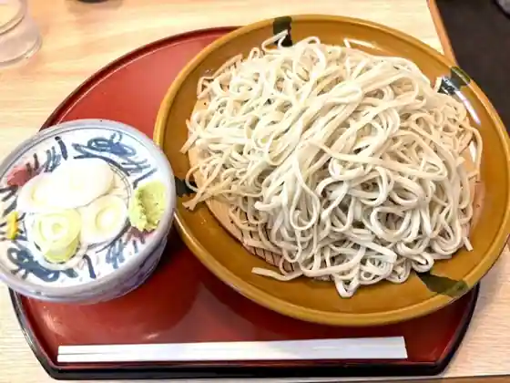
Soba Tokoro Tamura
秀華苑
Hideka En
アトリエ プティ ボア
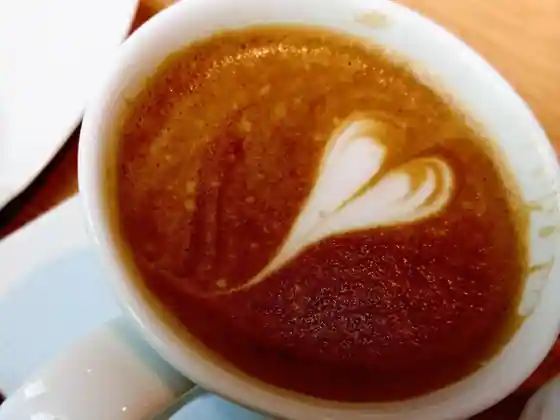
Atorie Putei Boa
らぁ麺×肉寿司居酒屋 鬼滅の桜
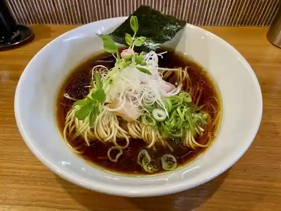
Ra Men X Niku Sushi Izakaya Oni Horono Sakura
ラウンジ アユボワン
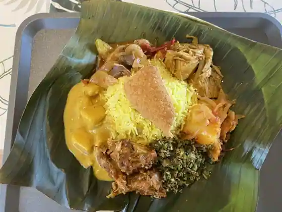
Raunji Ayubowan
サイハン レストラン＆バー
Saihan Restaurant & Bar
手打ちビャンビャン麺
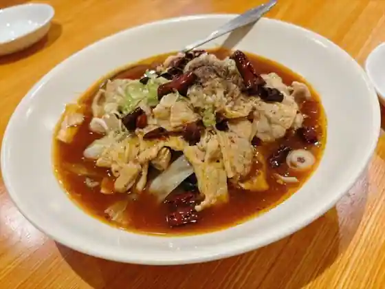
Teuchi Chi Byanbyan Men
はち
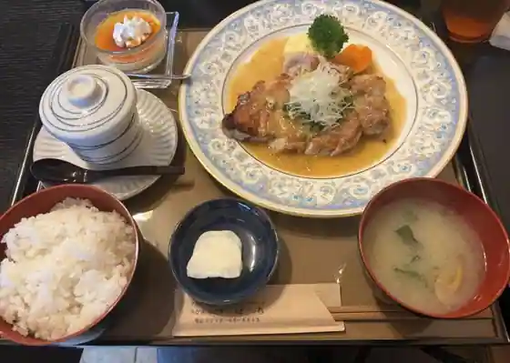
Hachi
旭川らぁめん としまる
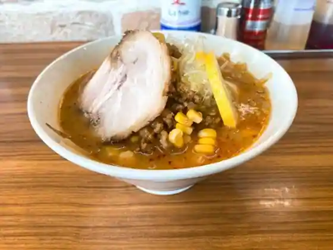
Asahikawa Ramen Toshimaru
スリランカカレー ラサイ
Surirankakare Rasai
中華料理きよし
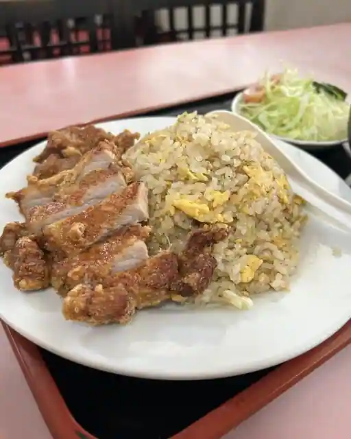
Chukaryori Kiyoshi
中華そば 光明軒
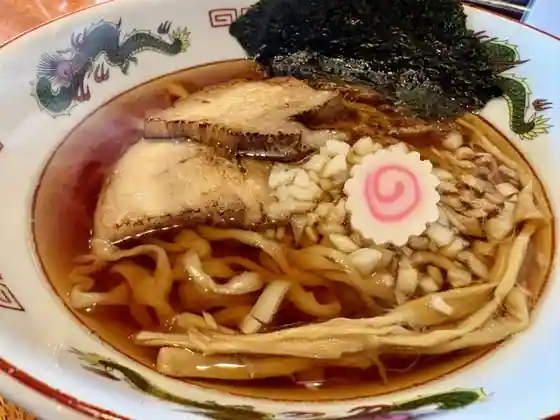
Chuka Soba Komyo Ken
スカイアリーナ
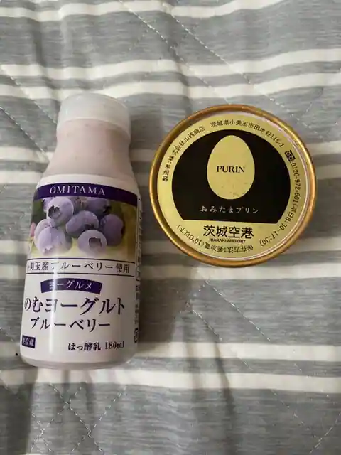
Sukaiarina
らん卵
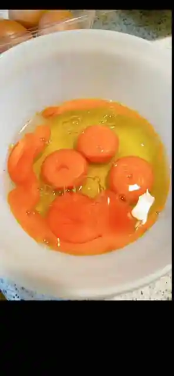
Ran Tamago
Sights
Ibaraki Airport
Sora no Eki (So Ra Ra)
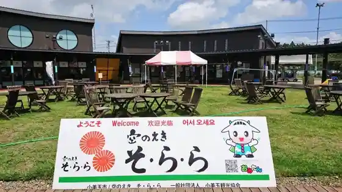
Taka no Fuzu Natto Museum
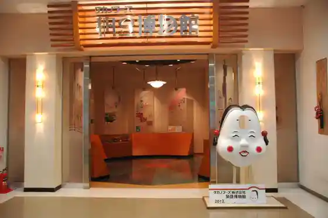
Grande Private Dog Resort Hitachi Gurande Puraibeto Doggu Resort Hitachi
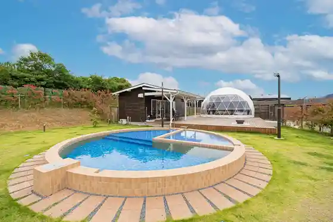
Hyotan Art Museum
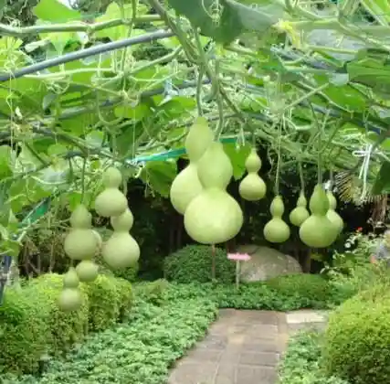
Omitama Shiki Bunka Kan Mi no Re
Kokudo 6 Go Omagari Cherry Blossoms
Ike Hana Ike
Yawaragi Farm
Tonkatsu Misawa
Enshu Ike
Chugokuryori Hideka En
Te Shigoto Sosai
JA Minori Town JA Mi no Ri Sanchi Chokubai Tokoro
Oi Ko Kogan Park